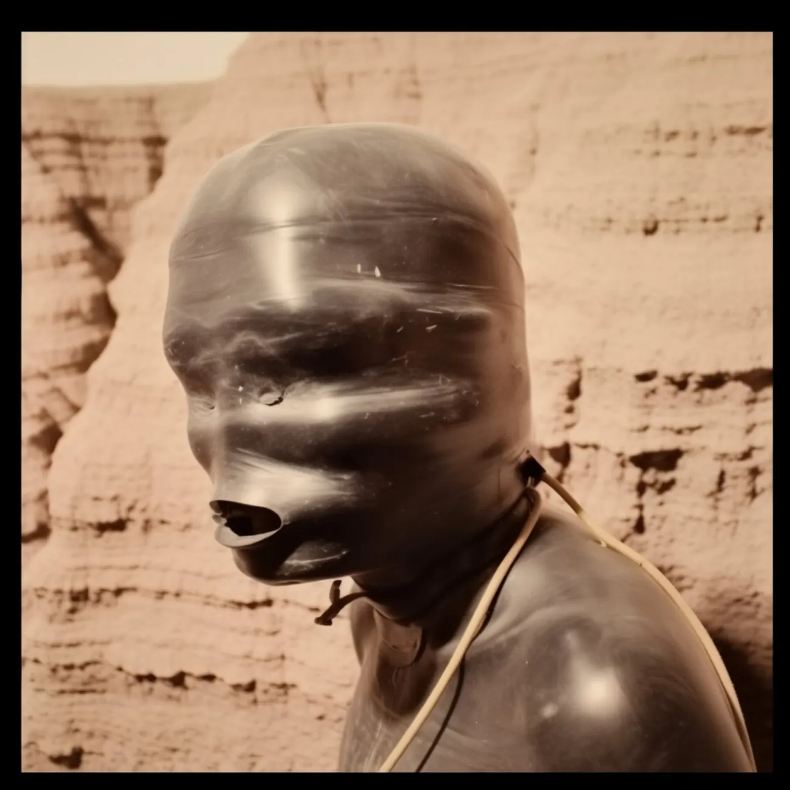
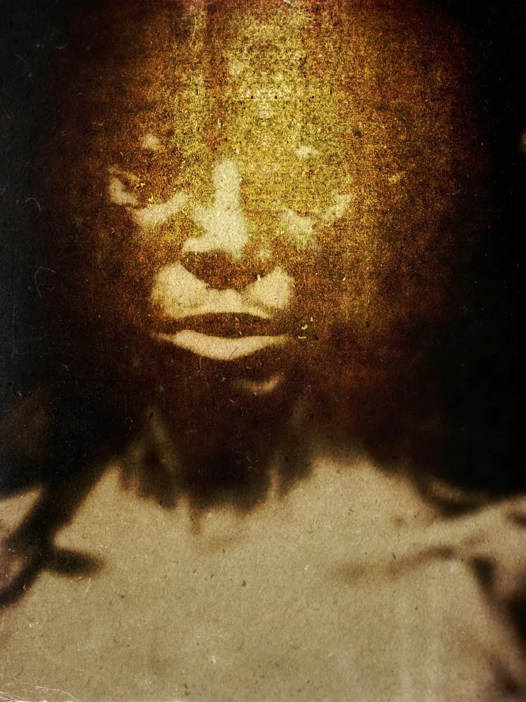
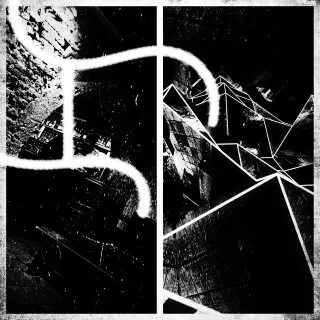
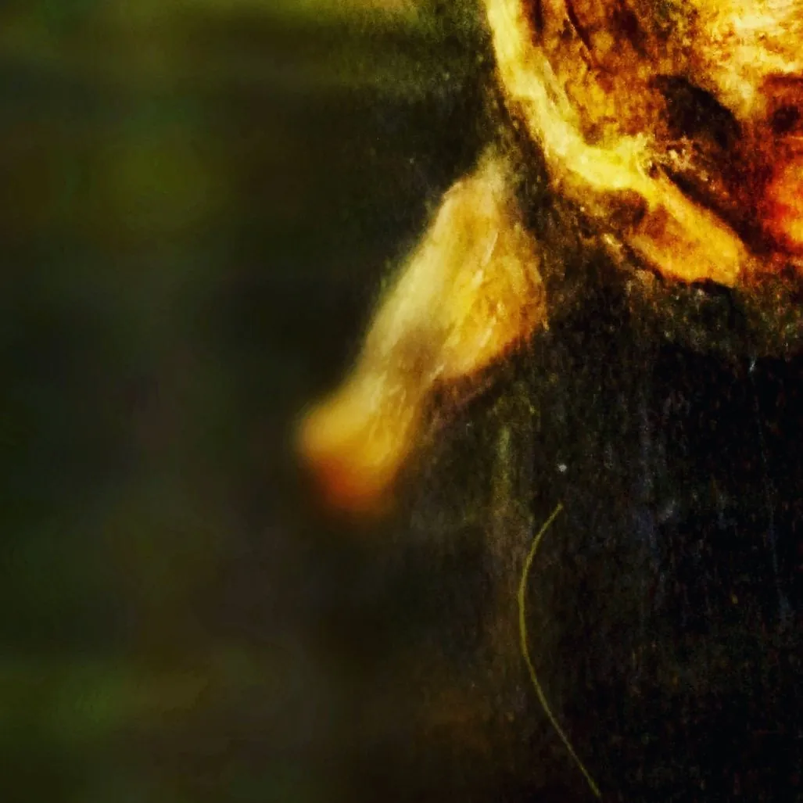
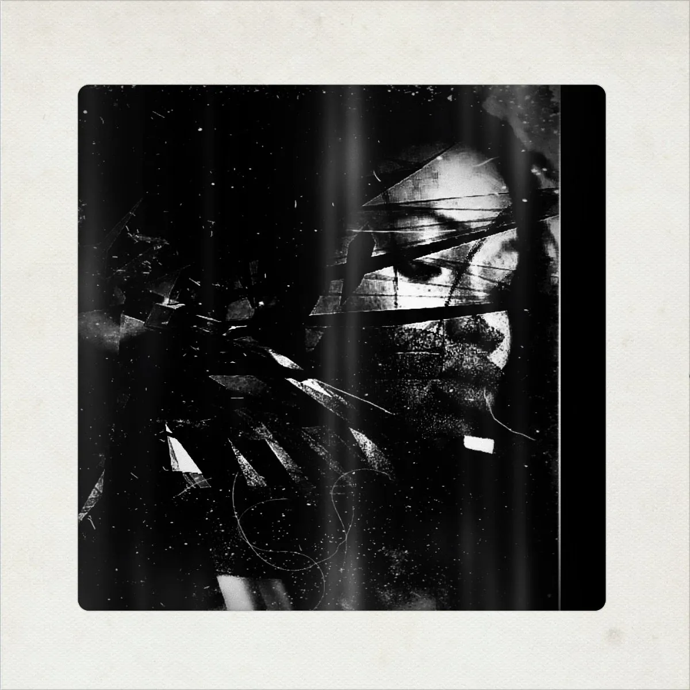
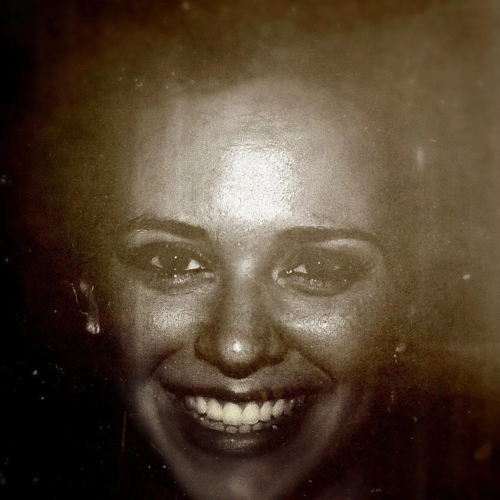

Projet transmédia qui prolifère, autour d'une fiction unique. A transmedia project proliferating around a single fiction.
20 albums concepts en haute définition, autant d'EPs et de mixtapes. 20 concept albums in high definition, as many EPs and mixtapes.
Musique, clips, écrits, photographies, mini-jeux. Tout un monde. Music, clips, writings, photographs, mini-games. A whole world.
Et des avatars — 18 — à la manière de Fernando Pessoa. And 18 avatars — in the manner of Fernando Pessoa.
Industrielle. Pétrolifère. Rituelle.Industrial. Petroliferous. Ritual.


Terriers de lapin. Points d'entrée possibles : Rabbit holes. Possible points of entry:

Les clips. Par où entrer ? The clips. Where to enter?

[…] bardé de ses mille références (musicales, mais aussi littéraires, photographiques, cinématographiques, politiques, historiques), [Unkle Maukie] ignore la panne d'inspiration […]. C'est même une telle charge que parfois Mauk Tenieb se dédouble, se détriple, enfile des masques et des costumes yupiks ou maasaïs, il nous dit qu'aujourd'hui il se nomme Honey Buzzard, Ts'ui Pên, dogXim […]. Sa voix, par le truchement de basses profondes et crénelées, de samples hantologiques et de kicks martiaux que Bryn Jones [Muslimgauze] n'aurait pas reniés, nous conte une vaste énigme […]. On y croisera la Faune [Korhogo Fauna, alias Hordalék ou les Masques] […], elle nous murmure […] que l'exploitation du pétrole est notre péché originel, les Seven Sisters nos divinités sinistres […], elle nous parle de [Jorge Luis] Borges et de ses labyrinthes, elle nous montre la cachette de William Burroughs depuis sa mort, nous devinons [Karl] Marx, [Michel] Clouscard, les pratiques secrètes du Golfe de Guinée […]. La dub, l'illbient, le trip-hop servent de haie d'honneur […]. On pourra aussi, via son Bandcamp ou son Instagram, suivre les hyperliens balisant son voyage, et qui nous conduiront vers le journal poétique d'un artiste ignorant le sommeil et le silence, ou encore vers une merveilleuse production photographique.[…] armed with his thousand references (musical, but also literary, photographic, cinematic, political, historical), [Unkle Maukie] knows no creative block […]. It is such a load that Mauk Tenieb sometimes doubles himself, triples himself, dons masks and Yupik or Maasai costumes; he tells us that today his name is Honey Buzzard, Ts'ui Pên, dogXim […]. His voice, conveyed through deep, crenellated basslines, hauntological samples and martial kicks that Bryn Jones [Muslimgauze] would not have disowned, tells us a vast riddle […]. There we'll encounter the Fauna [Korhogo Fauna, aka Hordalék or the Masks] […]; it murmurs to us […] that oil extraction is our original sin, the Seven Sisters our sinister […] deities; it speaks to us of [Jorge Luis] Borges and his labyrinths, shows us William Burroughs's hiding place since his death; we make out [Karl] Marx, [Michel] Clouscard, the secret practices of the Gulf of Guinea […]. Dub, illbient and trip-hop form a guard of honour […]. Through his Bandcamp or his Instagram, one can also follow the hyperlinks marking out his journey, which lead to the poetic journal of an artist who ignores sleep and silence, or to a marvellous photographic output.
The album [Esiön] by French artist Mauk Tenieb resonates beautifully with […] Twin Peaks […]. The Black and White Lodge. Dale Cooper and Windom Earle. The dancing Man from Another Place […]. I'd like to be among the town's 51,201 inhabitants. […] The anxiety-swollen spoken-word samples […] a sonic fabric permeated by hiss, rustling and the patter of rain.
Mauk Tenieb has soaked up Hungarian underground culture during the years he lived in Budapest […]. Now he is presenting us with […] an illbient work […] which amalgamates a plethora of images, influences and inspirations. […] Can't help seeing images from Blade Runner. Rick Deckard tiredly gazing at the score on his piano. Roy Batty and Pris Stratton in the Bradbury Building. […] Murky bars some decades from now, where robot pets scurry around rugged looking patrons. The sand haze in the Texan desert where, just like that, William Burroughs might appear to you in a dream […]
Une collaboration avec l'artiste Fire Beninois, 'worldbuilder' transmédia. Deux albums : Tsimtsum 1 et 2. A collaboration with the artist Fire Beninois, a transmedia worldbuilder. Two albums: Tsimtsum 1 and 2.

